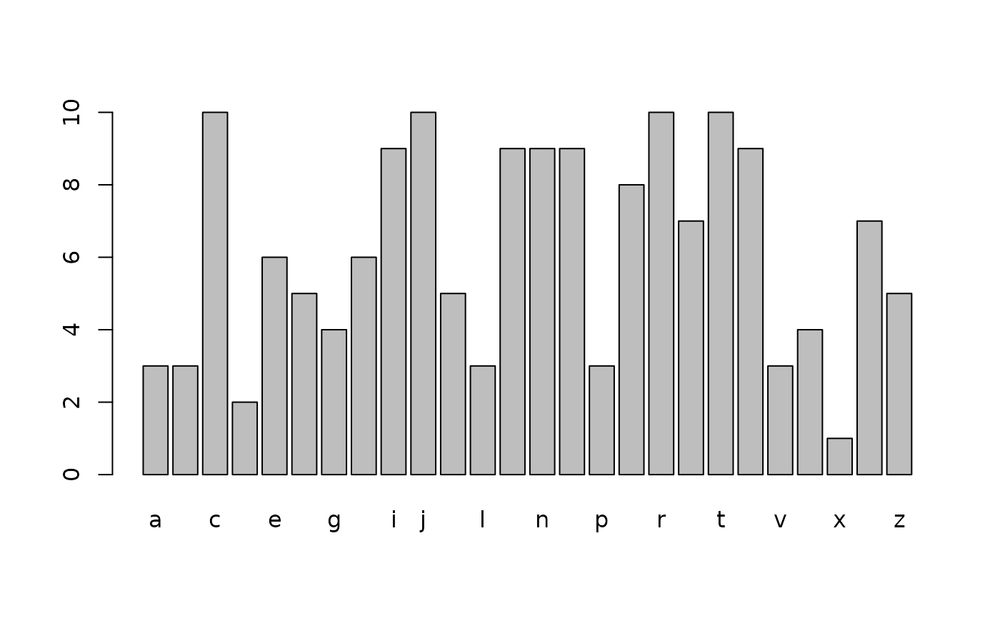

Generate a Frequency Table
freqTable.RdA frequency table emulating the SPSS FREQ output is generated.
Usage
freqTable(
x,
levels = sort(unique(as.character(x))),
missing = NULL,
description = NULL,
round = 1,
plot = FALSE
)Arguments
- x
vector of values to show frequencies for
- levels
(optional) vector for order of levels in
x- missing
vector of levels for which we consider missing and don't count in the valid percentage
- description
(optional) description for each level of
x. Must be same length and order aslevels- round
number of digits to round percentages to
- plot
logical; if
TRUE, a barplot is produced.
Value
A data frame with the following columns
- Class
Tells you which scores are valid and which are missing. Not shown if there are no missing values.
- Score
Different levels
- Frequency
Count for each score
- Percent
Percent of Frequency out of the grand total
- Valid Percent
Percent of Frequency out of the Valid scores. Not applicable if there are no missing values.
- Cumulative Percent
Accumulated Percent of Frequency out of the Valid Scores
- Description
If
descriptionis given, a description for each level
Examples
# Create vector of randomly reordered alphabet with various frequencies
# for each letter
set.seed(123)
n <- sample(10, length(letters), replace = TRUE)
x <- sample(rep.int(letters, times = n))
freqTable(x, plot = TRUE)

#> Score Frequency Percent Cumulative Percent
#> a a 3 1.9 1.9
#> b b 3 1.9 3.8
#> c c 10 6.2 10.0
#> d d 2 1.2 11.2
#> e e 6 3.8 15.0
#> f f 5 3.1 18.1
#> g g 4 2.5 20.6
#> h h 6 3.8 24.4
#> i i 9 5.6 30.0
#> j j 10 6.2 36.2
#> k k 5 3.1 39.4
#> l l 3 1.9 41.2
#> m m 9 5.6 46.9
#> n n 9 5.6 52.5
#> o o 9 5.6 58.1
#> p p 3 1.9 60.0
#> q q 8 5.0 65.0
#> r r 10 6.2 71.2
#> s s 7 4.4 75.6
#> t t 10 6.2 81.9
#> u u 9 5.6 87.5
#> v v 3 1.9 89.4
#> w w 4 2.5 91.9
#> x x 1 0.6 92.5
#> y y 7 4.4 96.9
#> z z 5 3.1 100.0
#> 28 Total 160 100.0 NA
# Treat vowels as missing
freqTable(x, missing = c("a", "e", "i", "o", "u"), round = 2)
#> Class Score Frequency Percent Valid Percent Cumulative Percent
#> b Valid b 3 1.9 2.4 2.4
#> c c 10 6.2 8.1 10.5
#> d d 2 1.2 1.6 12.1
#> f f 5 3.1 4.0 16.1
#> g g 4 2.5 3.2 19.4
#> h h 6 3.8 4.8 24.2
#> j j 10 6.2 8.1 32.3
#> k k 5 3.1 4.0 36.3
#> l l 3 1.9 2.4 38.7
#> m m 9 5.6 7.3 46.0
#> n n 9 5.6 7.3 53.2
#> p p 3 1.9 2.4 55.6
#> q q 8 5.0 6.5 62.1
#> r r 10 6.2 8.1 70.2
#> s s 7 4.4 5.6 75.8
#> t t 10 6.2 8.1 83.9
#> v v 3 1.9 2.4 86.3
#> w w 4 2.5 3.2 89.5
#> x x 1 0.6 0.8 90.3
#> y y 7 4.4 5.6 96.0
#> z z 5 3.1 4.0 100.0
#> 28 Total 124 77.5 100.0 NA
#> a Missing a 3 1.9 NA NA
#> e e 6 3.8 NA NA
#> i i 9 5.6 NA NA
#> o o 9 5.6 NA NA
#> u u 9 5.6 NA NA
#> Total Total 160 100.0 NA NA